Країни з найвідомишими стравами
-
Піцца,Італія
Піцца є однією з найпопуляріших страв у світі. Винахід піци приписують давньоримському полководцеві та гурманові Лукулу.
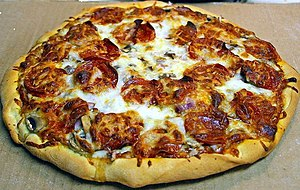 -
Бургер,США
Бургер є однією з найпопуляріших страв у світі. Гамбургери отримали широку популярність в 1904 році на Всесвітній виставці в Сент-Луїсі. Та найбільшою популярністю гамбургери зобов'язані компанії McDonald's, мережа якої шаленими темпами поширилась світом. McDonald's і їх гамбургери стали барометром для американської та світової економік

-
Круасани,Франція
Круасан - одна з найпопулярніших страву світі. Вважають, що перший рецепт круасанів був опублікований у 1891 році. Рецепт цих виробів з листкового тіста вперше згадується у Франції у 1905 році.
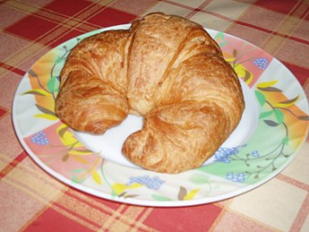
Перелік країн в яких ми були та наші улюблені страви з них
-
Україна - Борщ(його робив мій дядько,він його варив аж 2 дня та він був гострим)
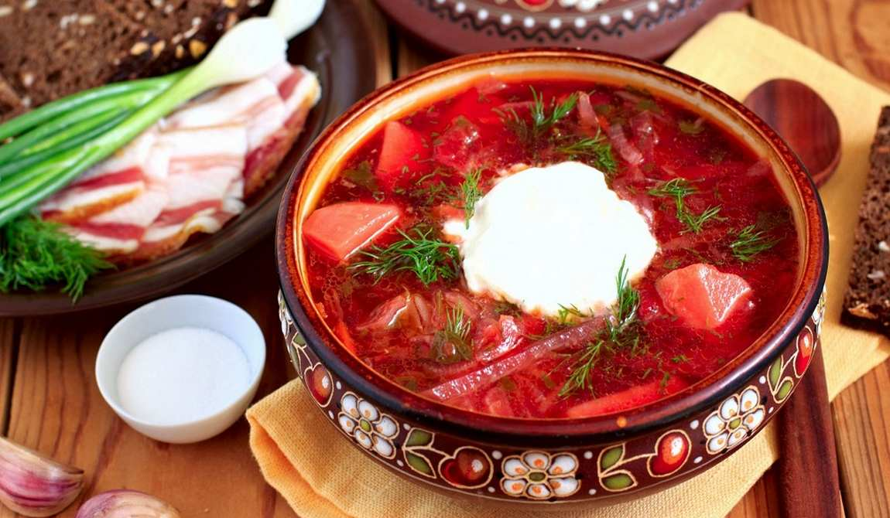 -
Єгипет - Басбуса
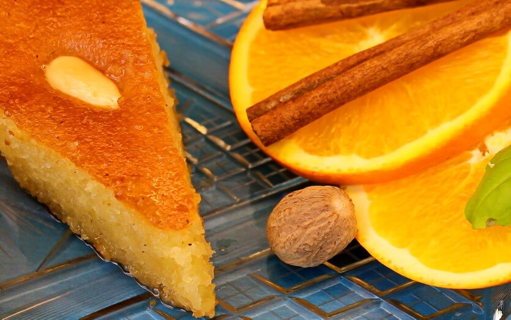 -
Турція - Локма
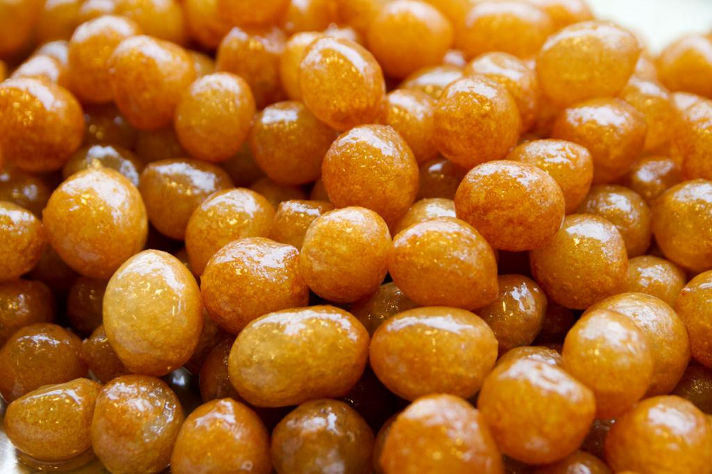 -
Польша - Качка з яблуками
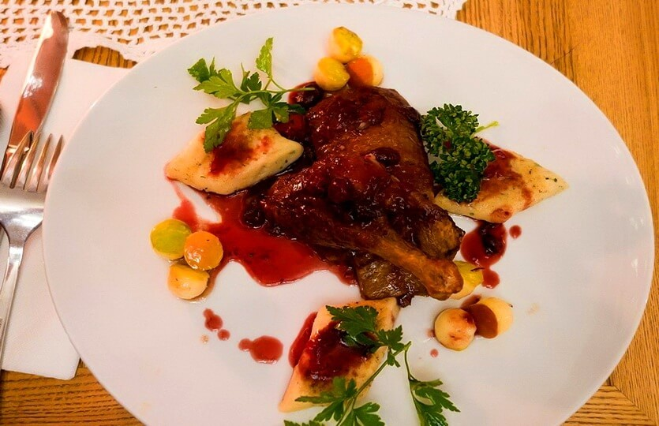 -
Німмеччина - Шнітцель(котлета в клярі)
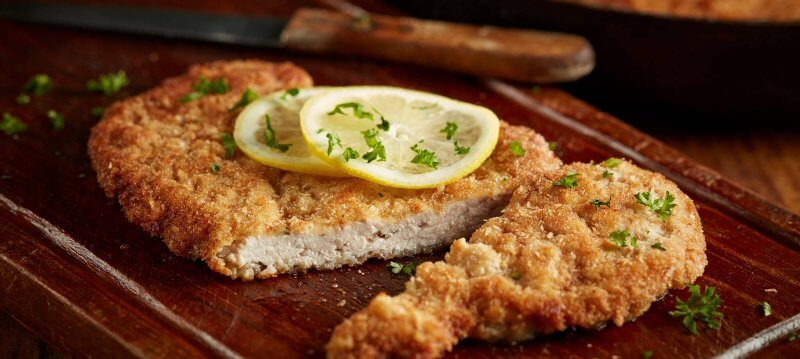 -
Нідерланди - Патат
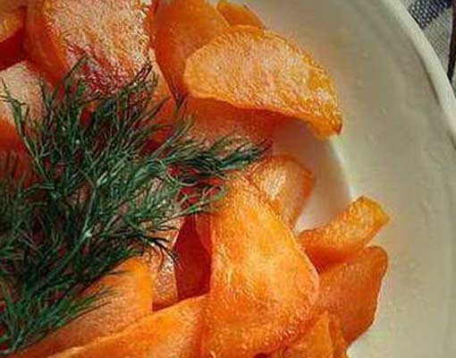 -
Франція - Круасан
-
Італія - Тірамісу
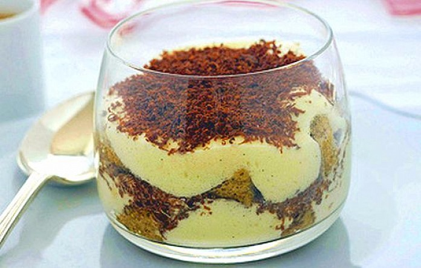 -
Монако -
Своєю національної кухні на території країни, по суті, не існує. У всіх ресторанах і кафе використовуються страви французької, італійської та інших європейських кулінарних традицій.
-
Люксембург -
Кухня Люксембургу не можна порівняти ні з якою іншою в приготуванні раків, форелі, щуки, смажених окунів.
Перелік країн в які ми мріємо полетіти не були та страви з них
-
Іспанія - Хамон
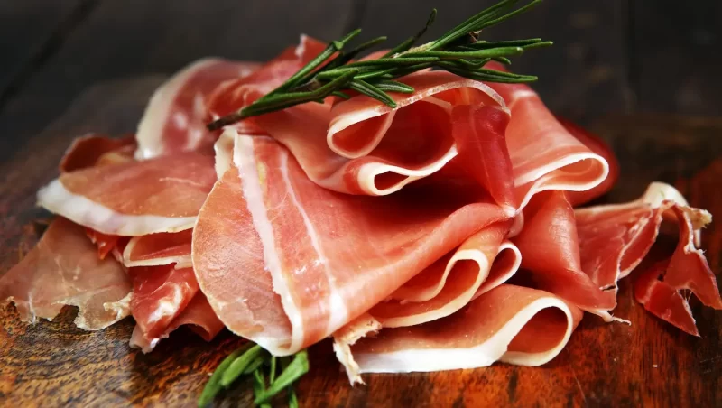 -
США - Бургер
-
Об'єднанні Арабські Емірати(Дубай) - Верблюже М'ясо
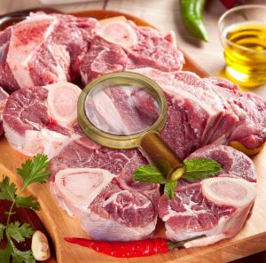
Мої улюбленні страви та звідки вони
-
Хачапурі-по-аджарскі,Грузія
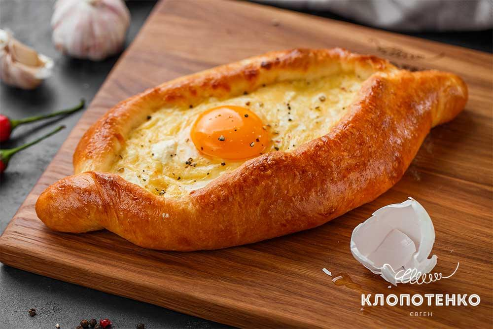 -
Лазанья,Італія
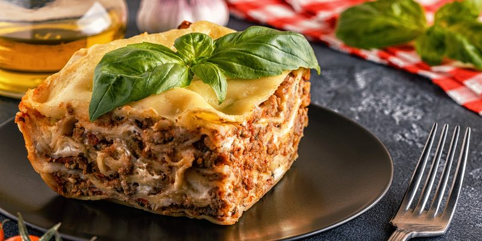 -
Тірамісу,Італія